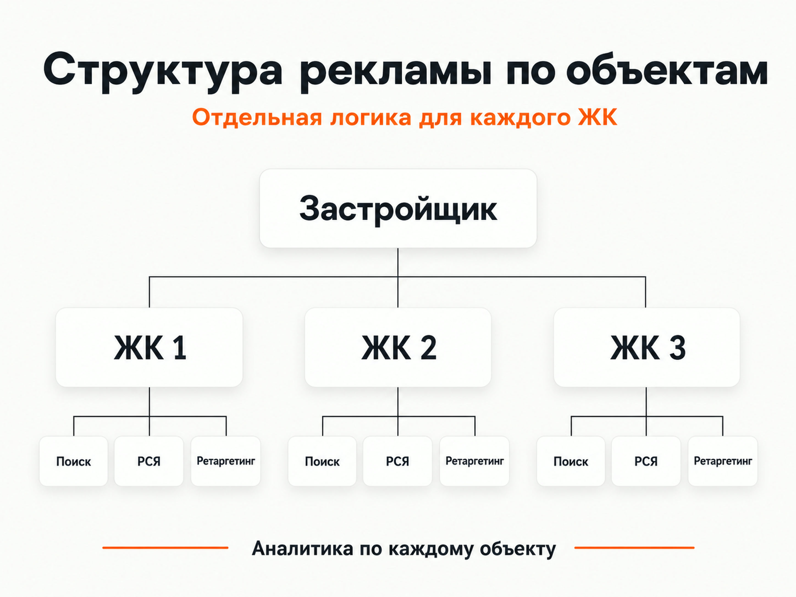
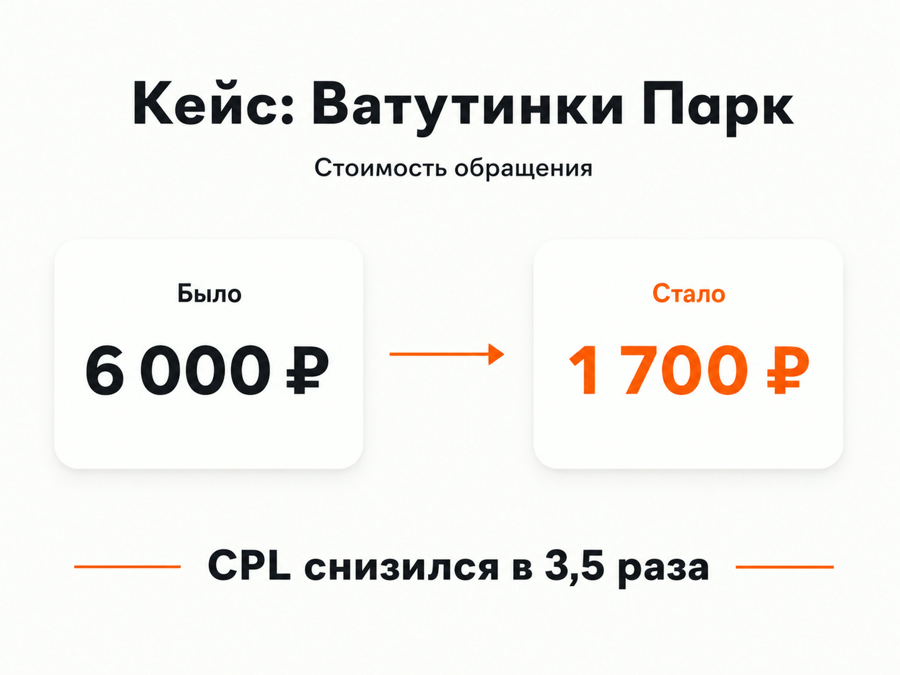

Яндекс Директ
Яндекс Директ для застройщика: настройка рекламы ЖК и привлечение заявок
Яндекс Директ для застройщика имеет смысл настраивать как систему привлечения потенциальных покупателей, а не как отдельную кампанию на несколько запросов вроде «купить квартиру в новостройке». В недвижимости пользователь может сравнивать проекты, районы, планировки и условия покупки довольно долго. Поэтому рекламную эффективность лучше оценивать не только по стоимости заявки, но и по квалифицированным обращениям, показам объекта, бронированиям и сделкам.
Для застройщика особенно важны четыре вещи: разделение рекламы по объектам и типам спроса, сильная посадочная страница, корректная аналитика и передача в рекламу данных о качестве лидов.
Чем реклама застройщика отличается от обычной контекстной рекламы
При продаже квартир рекламируется дорогой продукт с длинным циклом принятия решения. Пользователь редко выбирает объект после первого посещения сайта. Он может несколько раз возвращаться к предложению, искать название ЖК, смотреть расположение, сравнивать стоимость квартир и только затем звонить в отдел продаж.
Есть и другая особенность. Застройщик зачастую продвигает сразу несколько типов объектов:
- разные жилые комплексы;
- квартиры с разным количеством комнат;
- студии;
- коммерческие помещения;
- готовые и строящиеся дома;
- объекты разных ценовых сегментов.
Объединять все это в одну рекламную кампанию обычно неудобно. У разных ЖК отличается спрос, стоимость привлечения клиента и конверсия сайта.
Я сталкивался с этим при продвижении нескольких московских ЖК со студиями площадью 10-20 м². По каждому объекту реклама работала по-разному: средняя стоимость заявки через форму составила 528 ₽, но между отдельными ЖК разброс был от 300 до 5000 ₽. Поэтому каждый объект продвигался отдельными кампаниями и анализировался отдельно. Подробнее цифры и схема работы есть в кейсе по продаже студий в Москве.
Это хороший пример того, почему средний CPL по всей недвижимости мало о чем говорит. Один объект может приносить заявки стабильно, а другой при тех же настройках и похожей аудитории конвертироваться значительно хуже.
Что нужно подготовить до запуска Яндекс Директа
Начинать лучше не со сбора ключевых фраз, а с экономики проекта и воронки продаж.
Для каждого ЖК я бы отдельно определил:
- какие квартиры или помещения нужно продавать в первую очередь;
- в каких регионах находится потенциальная аудитория;
- какие обращения отдел продаж считает квалифицированными;
- сколько квалифицированных лидов требуется;
- какие действия происходят после заявки;
- до какого этапа можно передавать данные обратно в аналитику.
Если у застройщика несколько объектов, полезно заранее определить приоритет каждого. Рекламный бюджет не обязательно распределять между ЖК поровну. Имеет смысл учитывать остаток квартир, маржинальность, планы отдела продаж и реальную способность конкретного объекта превращать трафик в сделки.
Что считать конверсией
На сайте может быть много целей, но они имеют разную ценность.
| Этап | Что произошло |
|---|---|
| Заявка | Пользователь отправил форму |
| Звонок | Позвонил в отдел продаж |
| Квалифицированный лид | Подтвержден реальный интерес к покупке |
| Встреча или показ | Клиент перешел на следующий этап |
| Бронирование | Выбран конкретный объект |
| Сделка | Покупка состоялась |
Если оптимизировать рекламу только под отправку формы, алгоритм будет искать пользователей, склонных заполнять формы. Это не всегда те же люди, которые затем покупают квартиру.
Яндекс позволяет передавать в Метрику и Директ офлайн-конверсии из CRM, в том числе информацию о квалифицированных обращениях и последующих стадиях сделки. Эти данные можно использовать для анализа и оптимизации рекламных кампаний.
Для застройщика такая схема особенно полезна из-за большого разрыва между первой заявкой и продажей.
Как разделить рекламные кампании застройщика

Универсальной структуры нет, но смешивать весь спрос в одной кампании я бы не стал.
Брендовый спрос
Сюда относятся запросы по названию жилого комплекса и застройщика.
Пользователь уже знает объект и находится ближе к решению. Такой трафик стоит анализировать отдельно от общих запросов по недвижимости.
Общий коммерческий спрос
Например:
- купить квартиру в новостройке;
- квартира от застройщика;
- купить квартиру в новом ЖК;
- новостройки в конкретном районе;
- купить студию;
- купить двухкомнатную квартиру в новостройке.
В этой группе конкуренция обычно выше, потому что за одного пользователя одновременно борются разные ЖК, агентства и агрегаторы.
Запросы по характеристикам объекта
Спрос можно дополнительно разделять по параметрам, которые действительно влияют на выбор:
- район;
- ближайшее метро;
- количество комнат;
- площадь;
- класс жилья;
- готовность дома;
- наличие отделки;
- конкретные особенности проекта.
Человек, который ищет двухкомнатную квартиру возле определенного метро, уже сформулировал значительно более точные требования, чем пользователь с запросом «новостройки Москва».
РСЯ
Рекламная сеть Яндекса позволяет работать с пользователями за пределами непосредственного поискового запроса.
Здесь можно тестировать:
- новую аудиторию;
- посетителей сайта;
- пользователей, изучавших конкретные страницы;
- тех, кто начал взаимодействие с сайтом, но не оставил заявку;
- разные сегменты потенциальных покупателей.
Поиск и РСЯ лучше оценивать раздельно. У них разная модель поведения аудитории, и одинаковый CPL еще не означает одинаковое качество лидов.
В моем кейсе по trade-in недвижимости основной объем обращений удалось получать именно через РСЯ. Заявка там обходилась примерно в 1500 ₽, а общий средний CPL проекта держался около 1900 ₽. Отдельно считались квалифицированные лиды, стоимость которых составляла 1915-3010 ₽. Эти цифры относятся к конкретному проекту и не являются ориентиром стоимости рекламы для любого застройщика.
Смысл кейса в другом: оценивать канал нужно вместе с посадочной страницей и качеством обращения, а не только по цене клика.
Единая перфоманс-кампания в рекламе недвижимости
Сейчас основной гибкий инструмент Директа в режиме эксперта - Единая перфоманс-кампания. В ней можно управлять показами на Поиске, в Рекламной сети и Картах, работать с разными группами, аудиториями, объявлениями и стратегиями.
Для застройщика это позволяет разделять внутри рекламной системы разные сценарии и сегменты, но я все равно не советую чрезмерно объединять объекты.
Если у двух ЖК разная экономика, разные посадочные страницы и разный спрос, возможность технически поместить их в одну структуру еще не означает, что это нужно делать.
Отдельное продвижение недвижимости в тематическом поиске Яндекса
Кроме обычных кампаний Директа, у Яндекса есть специальный инструмент для индустрии недвижимости. Он позволяет продвигать жилые комплексы в тематических разделах поиска и показывать пользователю предложения с характеристиками объектов.
Для подключения жилой комплекс должен иметь проектную декларацию. Данные об объектах передаются через XML-фиды. Полнота информации об объекте влияет на ранжирование предложения внутри тематического раздела.
Для крупного застройщика с большим количеством квартир такой формат стоит рассматривать отдельно от классической рекламы по ключевым запросам.
Каким должен быть сайт застройщика для рекламы
Даже хорошо настроенный Яндекс Директ не исправит слабое предложение или неудобную посадочную страницу.
Человек после клика должен быстро получить информацию, которая нужна ему для выбора объекта. Обычно это:
- расположение ЖК;
- актуальные планировки;
- площадь квартир;
- стоимость или понятный способ ее узнать;
- срок сдачи;
- фотографии и визуализации;
- информация об отделке;
- инфраструктура;
- способы покупки;
- документы;
- контакты отдела продаж.
Необязательно помещать все сведения на первом экране. Главное, чтобы пользователь мог быстро найти ответы и перейти к следующему действию без лишних препятствий.
Для разных ЖК лучше вести рекламный трафик на соответствующие страницы объектов. Отправлять человека, который искал конкретный жилой комплекс, на общую главную страницу застройщика обычно менее логично.
Когда помогает квиз
Квиз подходит не каждому проекту. Он полезен, когда посетителю действительно нужно помочь подобрать вариант по нескольким параметрам.
Например:
- количество комнат;
- район или корпус;
- бюджет;
- срок покупки;
- способ связи.
В проекте по trade-in недвижимости отдельный лендинг с квизом оказался значительно эффективнее старого многостраничного сайта. Но копировать эту механику во все проекты без теста я бы не стал. Для известного ЖК пользователь может предпочесть сразу открыть каталог квартир и самостоятельно изучить предложения.
Оффер в объявлениях
Объявление застройщика должно помогать человеку понять, почему ему стоит открыть именно этот объект.
Тестировать можно конкретные характеристики предложения:
- расположение;
- стоимость;
- срок сдачи;
- доступные планировки;
- отделку;
- инфраструктуру;
- условия покупки;
- особенности конкретного ЖК.
Использовать в объявлениях нужно только актуальную информацию. Если цена, наличие квартир или условия акции изменились, объявления и посадочные страницы следует обновлять одновременно.
Для нескольких объектов лучше готовить отдельные сообщения. Универсальное объявление «Квартиры в новостройке. Выгодные условия» проигрывает по информативности объявлению, которое отвечает на конкретный запрос пользователя.
Требования Яндекса к рекламе новостроек
При продвижении новостроек и долевого строительства действуют отдельные требования.
В текстовых объявлениях Яндекс автоматически добавляет предупреждение со ссылкой на проектную декларацию на наш.дом.рф. Для указания названия застройщика предусмотрена отдельная процедура через форму Яндекса.
В графические объявления Единой перфоманс-кампании, видео и медийные креативы необходимое предупреждение рекламодатель должен добавлять самостоятельно. Если в рекламе одновременно продвигаются ипотечные услуги, нужно учитывать и требования к рекламе банковских услуг.
Этот блок лучше проверять перед каждым новым запуском, поскольку требования площадки и рекламного законодательства могут меняться.
Почему нужно передавать в Директ качество лидов
Одна из главных проблем рекламы недвижимости - большое количество обращений еще не гарантирует хороший результат отдела продаж.
Два источника могут дать по 20 заявок:
- в первом случае 15 человек действительно рассматривают покупку;
- во втором квалификацию проходят только 4.
По обычному CPL кампании выглядят одинаково. По стоимости квалифицированного лида разница становится очевидной.
Яндекс позволяет передавать данные из CRM по ClientID, телефону или электронной почте и использовать офлайн-конверсии для оценки рекламных кампаний. Чем полнее данные о последующих действиях клиента, тем меньше приходится принимать решения только по отправкам форм.
Для застройщика я бы минимум разделял:
- первичное обращение;
- квалифицированный лид;
- следующий значимый этап воронки.
Если объем данных позволяет, дальше можно учитывать бронирования и сделки.
Реальный пример рекламы застройщика
Один из моих наиболее близких к теме проектов - продвижение коммерческих помещений от застройщика в ЖК «Ватутинки Парк» в Новой Москве.
До оптимизации реклама приносила 7 лидов примерно по 6000 ₽. После переработки воронки, квиза, рекламных сообщений и структуры кампаний стоимость обращения снизилась примерно до 1700 ₽. В одном из периодов 10 из 12 полученных лидов были квалифицированными.
В итоге CPL снизился почти в 3,5 раза. Полный разбор есть в кейсе Яндекс Директа для коммерческой недвижимости в ЖК «Ватутинки Парк».
В проекте была дополнительная сложность: заказчику требовалось не больше 15 лидов в месяц. После достижения лимита кампании приходилось останавливать. Для алгоритмов это неудобный режим, поскольку регулярные паузы мешают накоплению и использованию данных.
Поэтому при планировании рекламы застройщика полезно заранее учитывать возможности отдела продаж. Если компания способна обработать только определенный объем обращений, это лучше заложить в медиаплан и структуру кампаний, а не постоянно выключать рекламу после достижения лимита.
Как оценивать эффективность Яндекс Директа для застройщика

Я бы не использовал единственный показатель.
Минимальный набор:
- рекламные расходы;
- количество обращений;
- CPL;
- количество квалифицированных лидов;
- стоимость квалифицированного лида;
- количество звонков;
- встречи или показы;
- бронирования;
- сделки.
Для проектов с несколькими ЖК эту статистику нужно смотреть отдельно по каждому объекту.
Именно так было в проекте по продаже московских студий. Средний CPL выглядел очень хорошо, но отдельные ЖК отличались друг от друга в несколько раз. Если смотреть только агрегированную статистику рекламного кабинета, эту проблему легко пропустить.
Сколько нужно денег на рекламу застройщика
Универсальной стоимости лида или минимального рекламного бюджета для застройщика нет.
Цена зависит от:
- города;
- расположения ЖК;
- класса недвижимости;
- стоимости квартир;
- объема поискового спроса;
- количества конкурентов;
- качества самого предложения;
- сайта;
- известности застройщика;
- используемых рекламных форматов.
Поэтому я не ориентировался бы на опубликованный кем-то «средний CPL по новостройкам».
Логичнее идти от экономики конкретного проекта: определить допустимую стоимость привлечения покупателя, конверсию отдела продаж и на этой основе рассчитать допустимую стоимость квалифицированного обращения.
После запуска прогноз нужно заменить фактическими данными.
Частые ошибки при настройке рекламы застройщика
Все жилые комплексы объединены
В результате сложно понять, какой объект действительно приносит результат и куда нужно перераспределить бюджет.
Реклама оптимизируется по любой заявке
Алгоритм получает одинаковый сигнал и от потенциального покупателя, и от нецелевого обращения.
Не учитываются звонки
Для недвижимости звонок может быть одним из основных способов обращения.
Для всех запросов используется одна посадочная страница
Пользователь ищет конкретный объект или тип квартиры, а после клика вынужден заново искать его на сайте.
Кампании постоянно включают и выключают
При частых остановках становится сложнее накапливать стабильную статистику и работать с автоматической оптимизацией.
Оценивается только дешевизна лида
Дешевый CPL может скрывать низкую квалификацию. В недвижимости полезнее смотреть дальше первой формы.
Что в итоге
Яндекс Директ для застройщика может приводить покупателей как по сформированному поисковому спросу, так и через РСЯ и специальные форматы для недвижимости. Но итог зависит от всей связки: объекта, предложения, посадочной страницы, структуры кампаний, аналитики и работы отдела продаж.
В своих проектах по недвижимости я встречал разницу в стоимости заявок в несколько раз даже между отдельными ЖК внутри одного бизнеса. Поэтому рекламу застройщика лучше строить вокруг экономики конкретных объектов и квалифицированных обращений, а не вокруг средней стоимости клика или одной общей кампании.
Мои реальные результаты по этой тематике можно посмотреть в кейсах: коммерческая недвижимость в ЖК «Ватутинки Парк», продажа студий в Москве и trade-in недвижимости.
По вопросам настройки и ведения рекламы информация обо мне и контакты размещены на [naklikay.ru](https://naklikay.ru/).